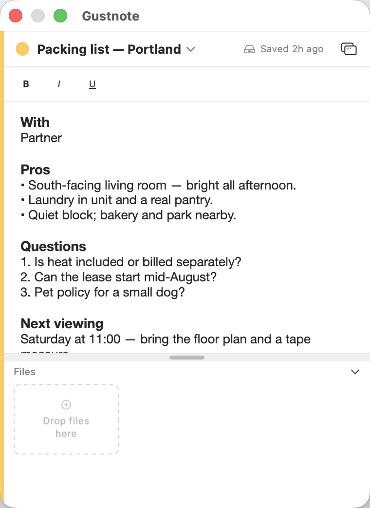
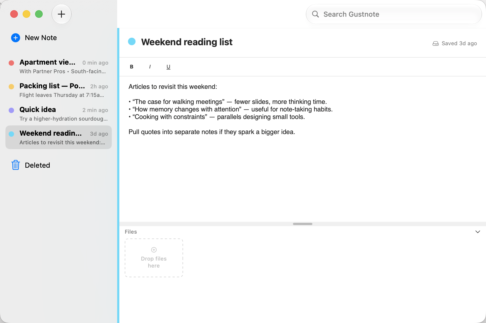
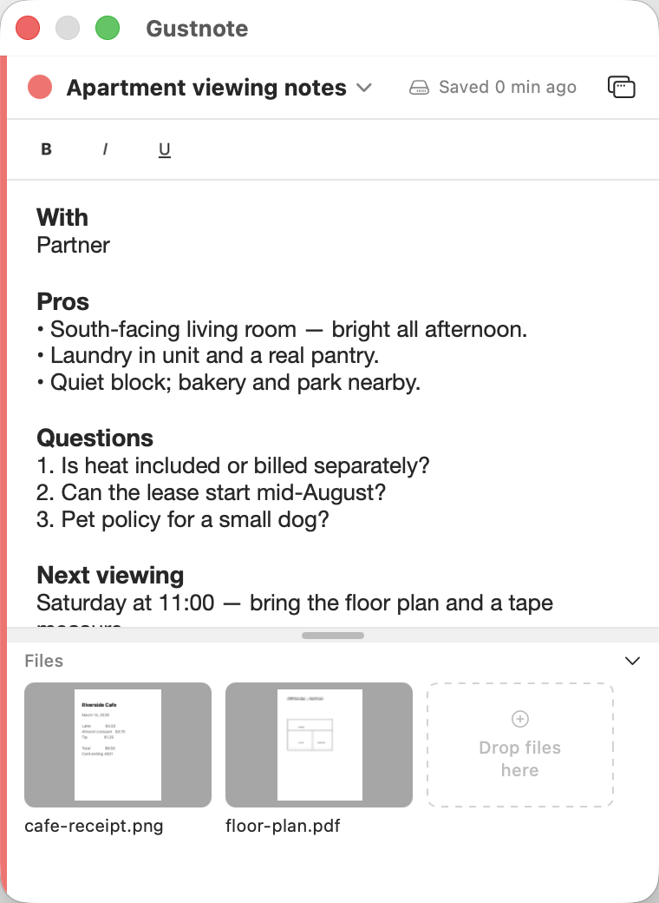
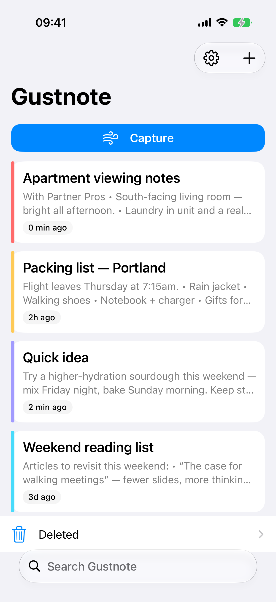
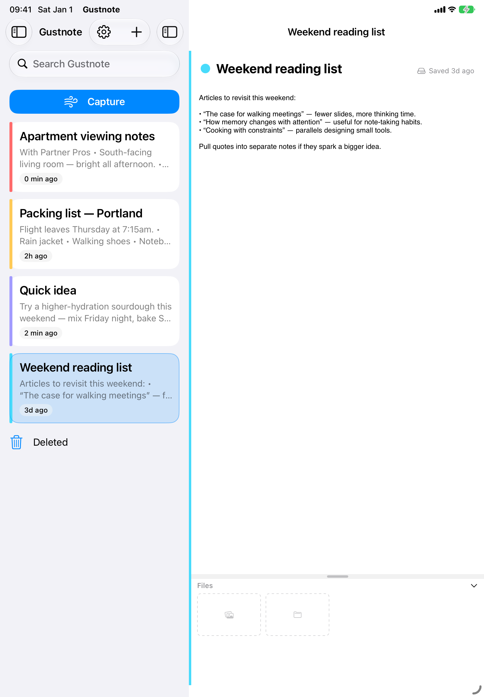

Global shortcut
Open Gustnote from any app, any window, any space with a customizable hotkey.
Built for Mac
Hit your global hotkey and a note window pops up instantly, no dock icon, no app switching, no losing your train of thought. Write it down, close it, get back to work.
Also on iPhone and iPad, the same note, always in your pocket.

Hit a shortcut, jot it down, done. Gustnote floats above everything on Mac and syncs instantly to your iPhone and iPad.
Captured automatically from the app on Mac, iPhone, and iPad.
Mac


iPhone

iPad

Everything about Gustnote is built so you can capture a thought and get back to work.
Open Gustnote from any app, any window, any space with a customizable hotkey.
The panel floats above everything and stays out of your dock, always within reach.
Every keystroke saves automatically. There's no save button because there's nothing to forget.
Search, arrow keys, or a one-tap switcher, move between notes without losing momentum.
Real rich text and attachments, not a plain scratchpad.
Gustnote syncs privately through iCloud, so the note you started on your Mac is already on your iPhone and iPad, no accounts, no setup, no extra app.
On iPad and iPhone, Gustnote becomes a focused note-taking companion: browse your notes, edit on the go, and pull up a file you saved from your Mac in seconds.
Your notes sync through your own private iCloud account. Nobody else, including us, can read them.
Pop open a note from anywhere on your Mac with a global shortcut, write in rich text, drop in files, and pick it back up instantly on iPhone and iPad via iCloud sync.
Download on the App Store